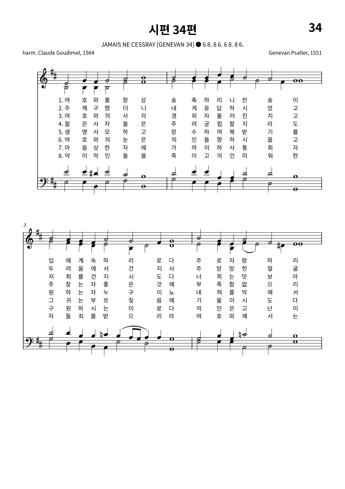

시편 34편
JAMAIS NE CESSRAY [GENEVAN 34] · 6 8. 8 6. 6 8. 8 6.
곡조: Genevan Psalter, 1551 · 화성: Claude Goudimel, 1564 · 가사: 개역한글판 시편 34편 편역(AI 초벌 편역판 · 신학 감수 전) · 8절
악보 PDF MusicXML(출력용) MusicXML(반주용, 전주·반복 포함) 개역한글 시편 34편 읽기
악보
← 시편 33편 목록반주 재생(준비 중)시편 35편 A →
가사
1절
여호와를 항상
송축하리니 찬송이
입에 계속하리로다
주로 자랑하리
곤고한 자 듣고
기뻐하리니 다 함께
주 광대하다 하면서
그 이름 높이세
여호와를 항상
송축하리니 찬송이
입에 계속하리로다
주로 자랑하리
곤고한 자 듣고
기뻐하리니 다 함께
주 광대하다 하면서
그 이름 높이세
2절
주께 구했더니
내게 응답하시었고
두려움에서 건지사
주 앙망한 얼굴
부끄럼 없도다
이 곤고한 자 부르니
주 들으시고 환난서
구원하셨도다
주께 구했더니
내게 응답하시었고
두려움에서 건지사
주 앙망한 얼굴
부끄럼 없도다
이 곤고한 자 부르니
주 들으시고 환난서
구원하셨도다
3절
여호와의 사자
경외자 둘러 진치고
저희를 건지시도다
너희는 맛보아
주 선하심 알라
피하는 자는 복되니
주 경외하라 성도들
부족함 없도다
여호와의 사자
경외자 둘러 진치고
저희를 건지시도다
너희는 맛보아
주 선하심 알라
피하는 자는 복되니
주 경외하라 성도들
부족함 없도다
4절
젊은 사자들은
주려 궁핍할지라도
주 찾는 자 좋은 것에
부족함 없으리
너희 소자들아
와서 내 말을 들으라
주 경외함을 너희게
가르치리로다
젊은 사자들은
주려 궁핍할지라도
주 찾는 자 좋은 것에
부족함 없으리
너희 소자들아
와서 내 말을 들으라
주 경외함을 너희게
가르치리로다
5절
생명 사모하고
장수하여 복 받기를
원하는 자 누구이뇨
네 혀를 악에서
금하고 입술을
궤사로부터 금하라
악을 버리고 선 행코
화평 따를지라
생명 사모하고
장수하여 복 받기를
원하는 자 누구이뇨
네 혀를 악에서
금하고 입술을
궤사로부터 금하라
악을 버리고 선 행코
화평 따를지라
6절
여호와의 눈은
의인을 향하시옵고
그 귀는 부르짖음에
기울이시도다
주 얼굴 악인을
대하사 자취 끊으며
의인 외치매 들으사
다 건지셨도다
여호와의 눈은
의인을 향하시옵고
그 귀는 부르짖음에
기울이시도다
주 얼굴 악인을
대하사 자취 끊으며
의인 외치매 들으사
다 건지셨도다
7절
마음 상한 자에
가까이 하사 통회자
구원하시는 이로다
의인은 고난이
많으나 주께서
모든 고난서 건지사
그 뼈 지키사 하나도
꺾이지 않도다
마음 상한 자에
가까이 하사 통회자
구원하시는 이로다
의인은 고난이
많으나 주께서
모든 고난서 건지사
그 뼈 지키사 하나도
꺾이지 않도다
8절
악이 악인들을
죽이고 의인 미워한
자들 죄를 받으리라
여호와께서는
그 종들 영혼을
구속하시니 저에게
피하는 자는 다 죄를
받지 않으리라
악이 악인들을
죽이고 의인 미워한
자들 죄를 받으리라
여호와께서는
그 종들 영혼을
구속하시니 저에게
피하는 자는 다 죄를
받지 않으리라